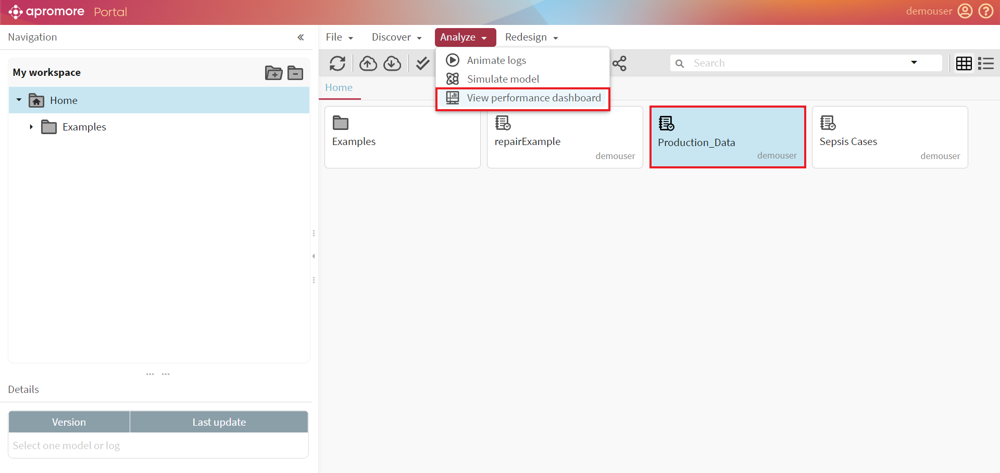
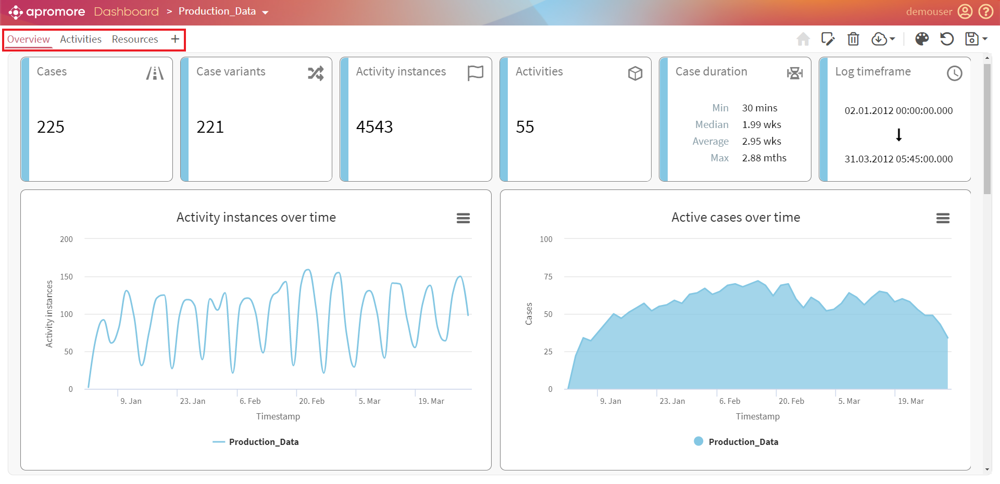
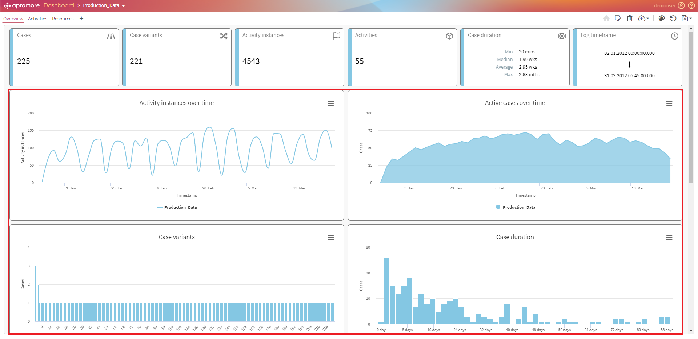
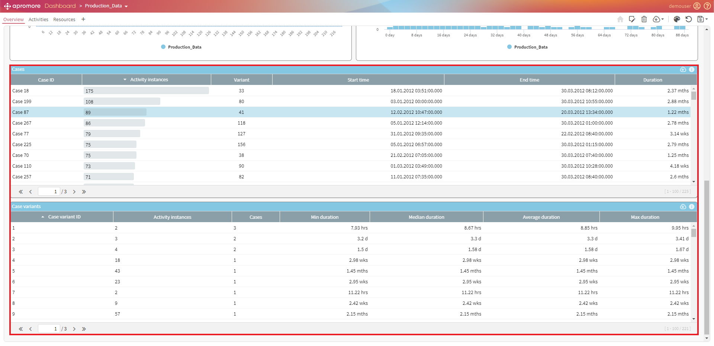
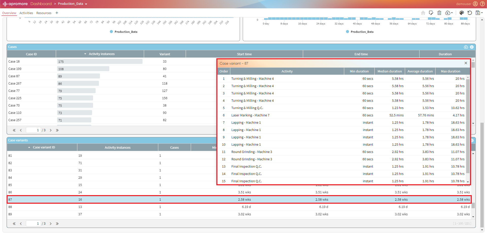
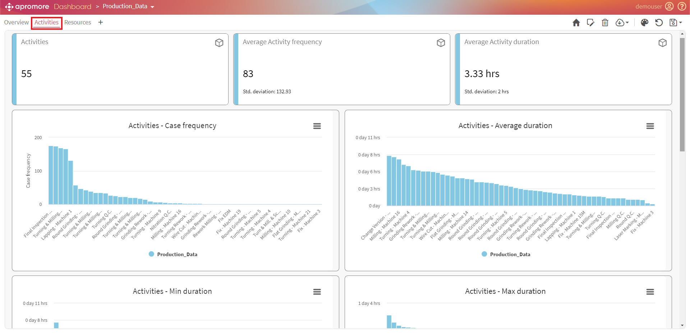
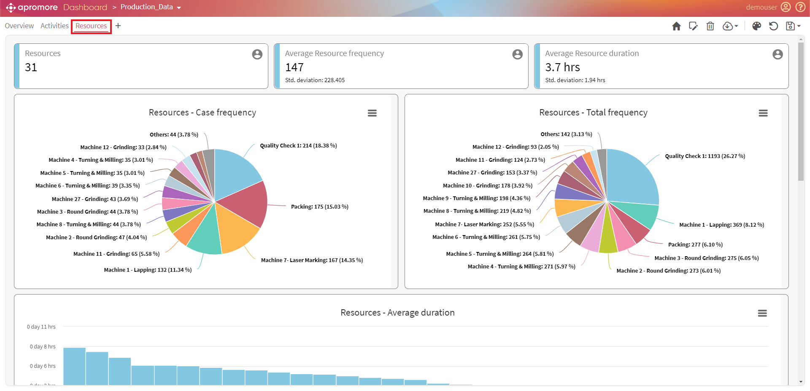
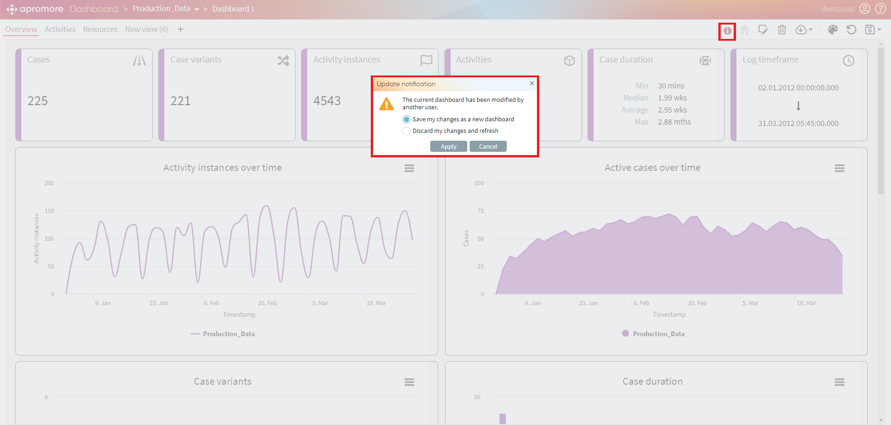

View dashboards
Apromore’s Custom Performance Dashboard allows users to analyze a business process from a performance measurement perspective visually. The Performance Dashboard displays a variety of aggregate statistics and charts. The Performance Dashboard plugin allows us to analyze one process in isolation or to compare multiple process variants. For example, we can use the Performance Dashboard plugin to compare how a given process is executed across multiple regions or compare the variant of a process consisting of slow cases versus faster cases.
To open the dashboard plugin, select at least one event log and click on Analyze - > View performance dashboard. To compare multiple process variants, we need to select multiple event logs and then open the Performance Dashboard plugin.

The customizable performance dashboard consists of three default views: Overview, Activities, and Resources. All the dashboards include statistic tiles, charts, and tables.

Overview
The overview section’s stat tiles consist of the event log’s performance measures like the number of activity instances, active cases over time, case variants, case duration, and log timeframe. Four main charts are presented in the overview dashboard: Events over time, Active cases over time, Case variants, and Case utilization.

Case Inspector
The case inspector displays a full list of cases and case variants for the selected event log, together with their corresponding statistics.

We can click on a given case in the Case Inspector to get further details about the activities performed in this case.

Activities
The activities dashboard includes the activities, average activity frequency, and average activity duration statistic tiles. It also includes different charts of various activity performance metrics such as case frequency, min/max duration, min frequency per case, et cetera.

Resources
The resources dashboard includes all the resource performance metrics like case frequency, total frequency, average duration, min duration, and max duration.

While viewing/editing a shared dashboard, we may receive an update notification stating that the dashboard is modified. We can choose to save/discard changes and click on Apply.
